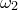

The set arrow command may be used to draw arrows on top of graphs; its syntax is illustrated by the following simple example:
set arrow 1 from 0,0 to 1,1
The number 1 immediately following set arrow specifies an identification number for the arrow, allowing it to be subsequently removed via the command
unset arrow 1
set noarrow 1
or to be replaced with a different arrow by issuing a new command of the form set arrow 1 .... The set arrow command may be followed by the keyword with to specify the style of the arrow. The keywords nohead, head and twohead, placed after the keyword with, can be used to generate arrows with no arrow heads, normal arrow heads, or with two arrow heads. twoway is an alias for twohead, as in the following example:
set arrow 1 from 0,0 to 1,1 with twoway
Line types and colours can also be specified after the keyword with, as in the example:
set arrow 1 from 0,0 to 1,1 with nohead \ linetype 1 c blue
The coordinates for the start and end points of the arrow can be specified in a range of coordinate systems. The coordinate system to be used should be specified immediately before the coordinate value. The default system, first measures the graph using the x- and y-axes. The second system uses the x2- and y2-axes. The screen and graph systems both measure in centimetres from the origin of the graph. In the following example, we use these specifiers, and specify coordinates using variables rather than doing so explicitly:
x0 = 0.0
y0 = 0.0
x1 = 1.0
y1 = 1.0
set arrow 1 from first x0, first y0 \
to screen x1, screen y1 \
with nohead
In addition to these four options, axis<n> specifies that the position is to be measured along the th horizontal or vertical axis – for example, axis3. This allows the graph to be measured with reference to any arbitrary axis on plots which make use of large numbers of parallel axes (see Section 1.7).